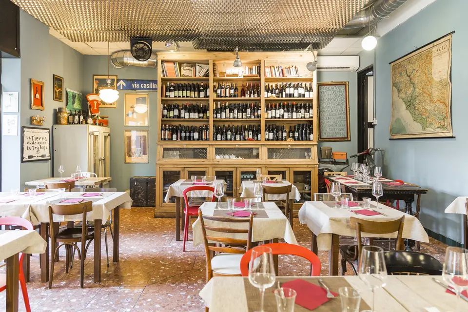
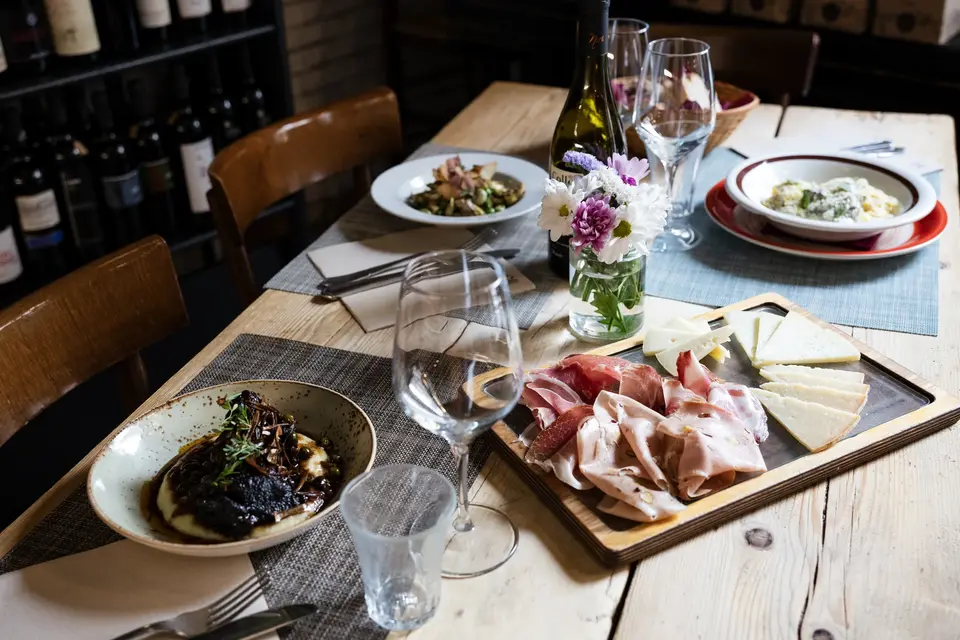
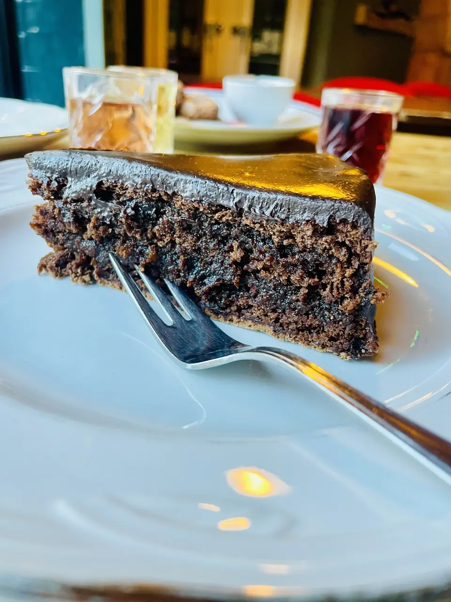
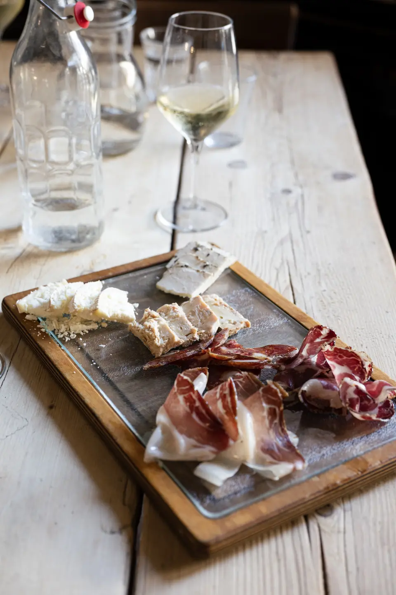
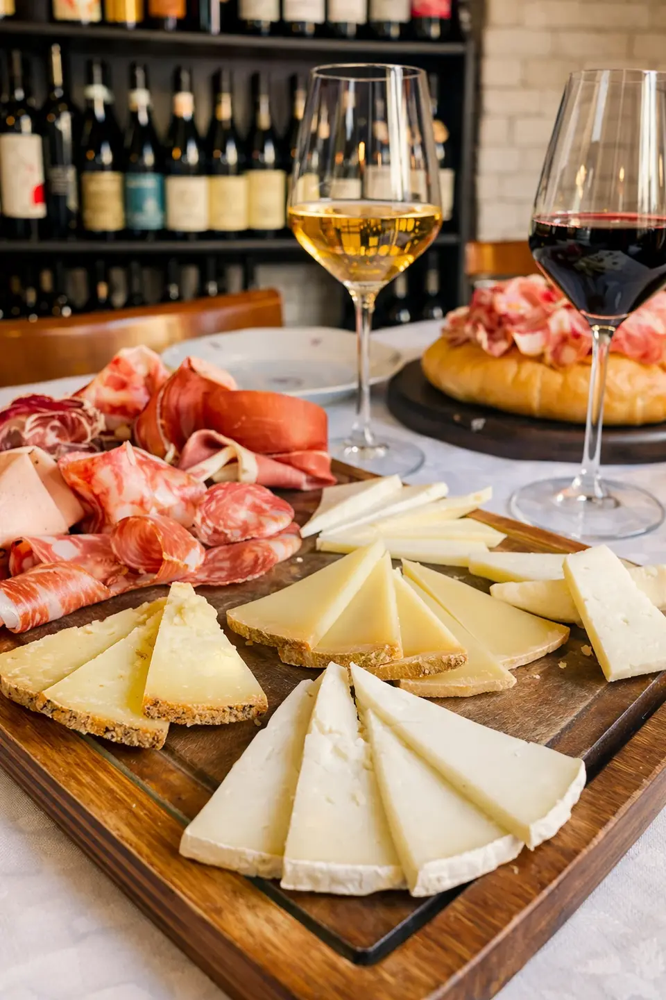
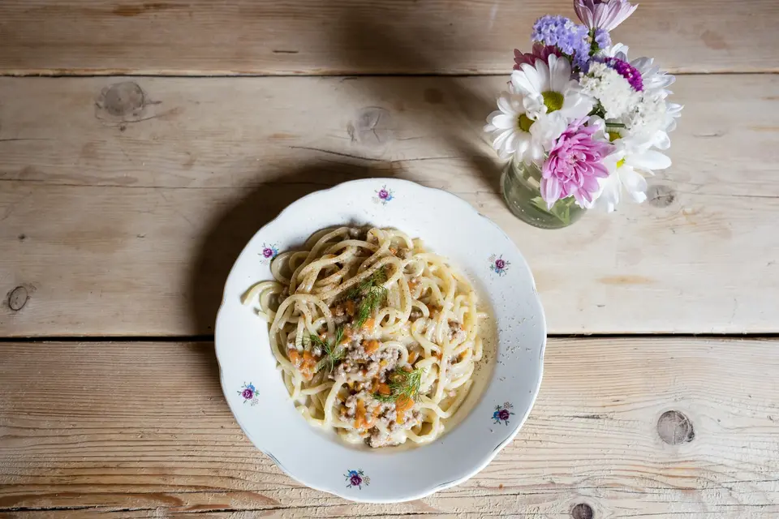
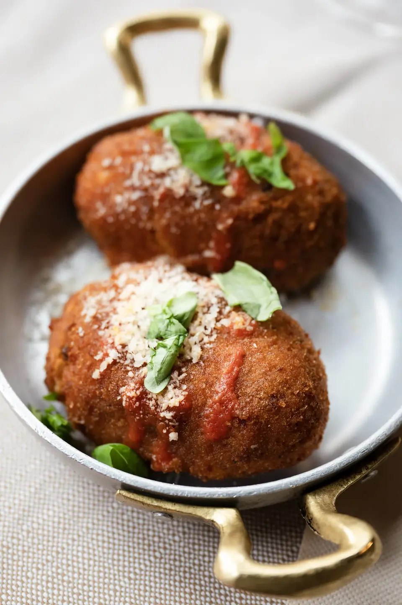
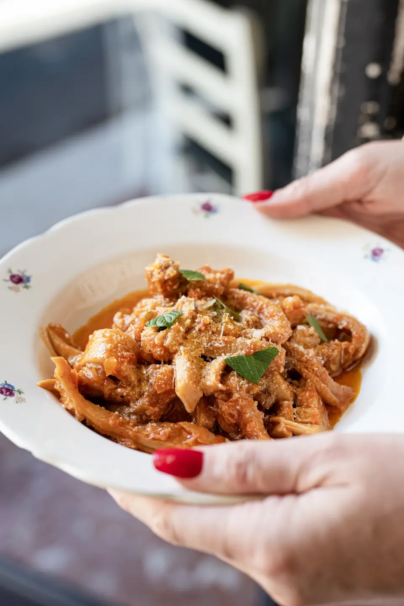
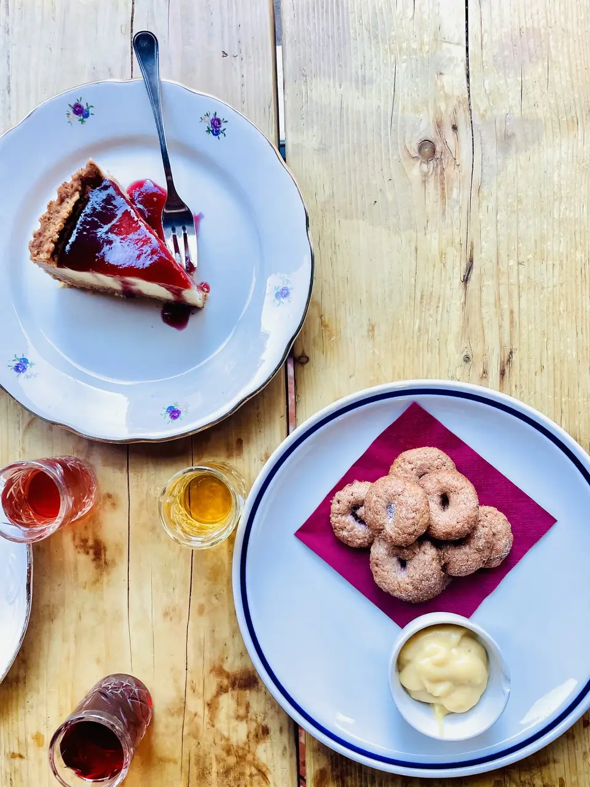

‹›❚❚ La carta Cucina romana e ciociara con i prodotti del bancone: salumi e formaggi di piccoli produttori del Lazio scelti da DOL. Scegli una sezione. Il banconeTaglieri, salumi e formaggi AntipastiAntipasti della cucina PrimiPaste e gnocchi SecondiCarne e baccalà Quinto quartoTrippa e coratella DolciLa carta di Michela Il vino Vini naturali del Lazio: chiedi in sala quali ci sono al calice. Piatti secondo disponibilità. Allergie e intolleranze: chiedi al personale.